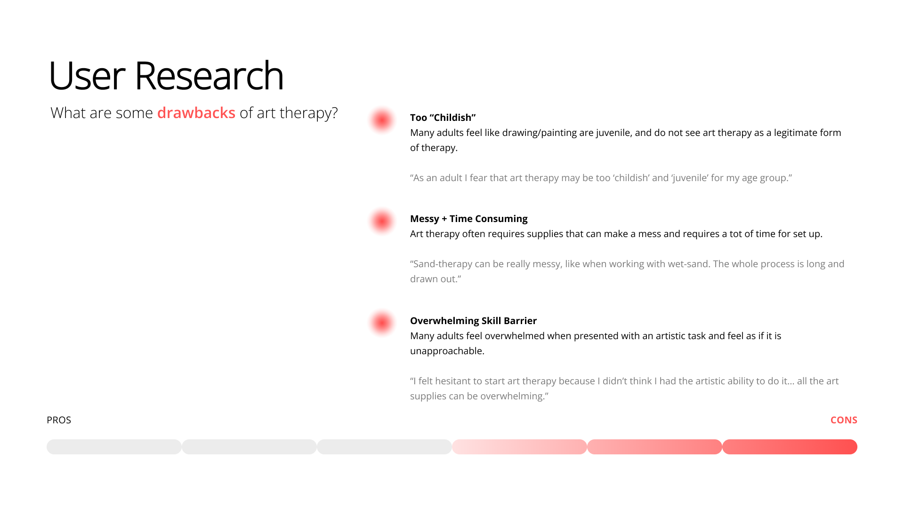
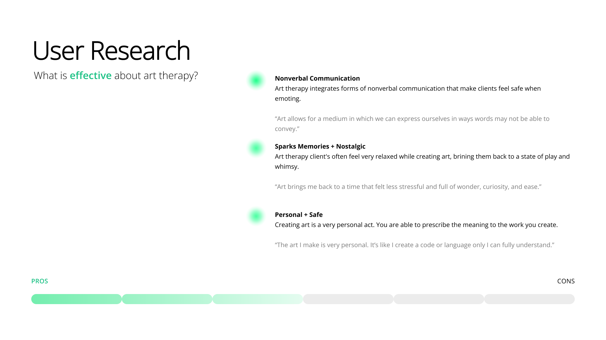

KAITLYN J. KIM
Industrial Design + Sustainability Studies @ the Rhode Island School of Design
Previously @ HyundaixRISD ↗
SCULPIE
2024
Prototyping, User Research, Data Collection, CAD, 3D Printing
Special thanks to Stephanie Jenkins for her expertise and guidance
Sculpie is an emotional expression toolkit intended for use within a clinical art therapy setting. Sculpie includes various symbols, each with a unique color, weight, and texture to help art therapy clients sculpt complex emotions. All components are held together by embedded magnets within each element, providing a satisfying and grounding tactile experience.
WHY ART THERAPY?
At the start of this project, I “brain-dumped” my thoughts onto a MIRO board. I wrote down everything I was interested in creating, topics that intrigued me, problems I wished to solve, and more.
therapy sat at the intersection of everything my brainstorming pointed toward. It offered a space where I could create tactile products that support people on a deeply personal level. I was drawn to how, at its core, art therapy is an indirect, calming, safe, and deeply personal form of communication.
I ultimately settled on the following "how might we" statement to drive my creative process for this project.
How might we… make art therapy more approachable for adults and accessible for motor compromised individuals?RESEARCH (1)
Survey of 30+ adults on their sentiments towards art therapy

RESEARCH (2)
Survey of 40+ individuals material and color in relation to emotion I was able to conduct a survey with 40 individuals with ages ranging from 10-65 years old.
In the survey I asked participants which colors, textures, memories, and foods they associated with the emotions of comfort, fear, frustration, and isolation. Data collected from the survey was then compiled and organized using a MIRO board where I drew connections between similar ideas and tallied the most common responses.
This research process informed many of the design choices, including the color and form of my initial sketches and ideas.

RESEARCH (3)
Expert Interview with Stephanie Jenkins a professional art and experience therapist
Consulting an art therapist was incredibly valuable to my design process, as it gave me deeper insight into Mrs. Jenkins’s practice and the broader field of art therapy.
Below are examples from one of her clients’ sand-tray therapy sessions. Mrs. Jenkins maintains an extensive collection of symbolic objects and two sand trays—one dry and one wet—where clients are encouraged to “play” and organize their thoughts and emotions through tactile expression.